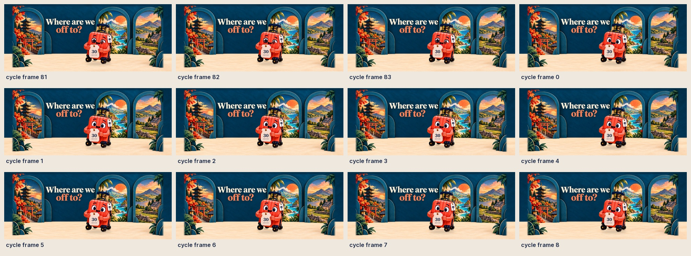
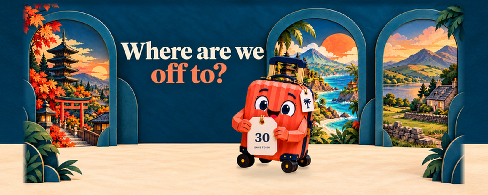
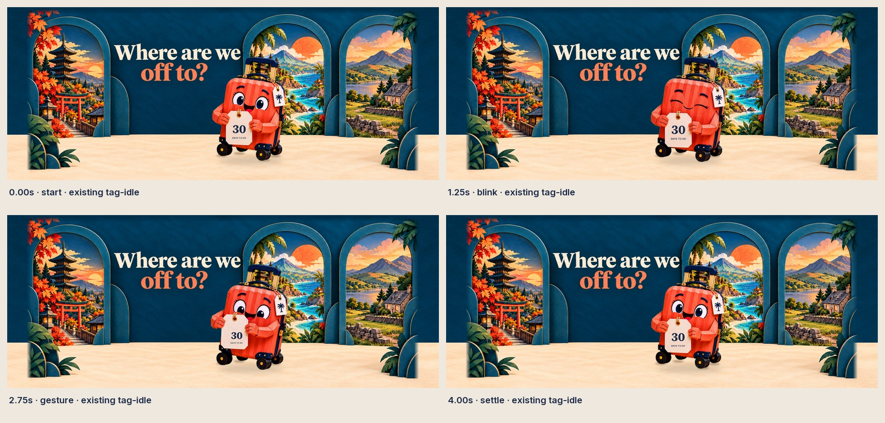
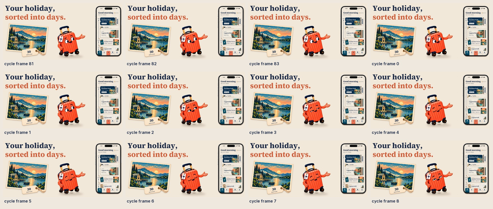
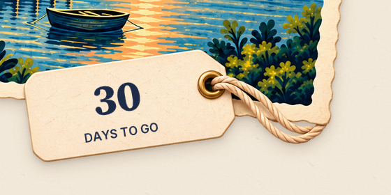
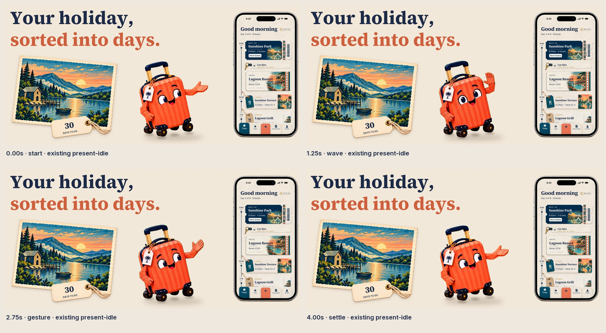

A little holiday anticipation.
Two locally assembled Travi loops, now with the scale change at the join corrected. The approved artwork, countdown lettering and genuine app screen stay sharp and steady.
New paid video jobs: 0Header artwork v4 · Search artwork v5 · Loop revision 2 for playback review. Both silent loops are 7 seconds at 30 fps. Detail views show the official art safe area for inspection; they are not a simulated App Store placement.
Where are we off to?
Travi proudly holds the countdown, gives a soft blink and a small tag jiggle, then returns to his starting pose. Uses the existing tag-idle performance.

Inspect the corrected loop join

Compare first motion pass
The complete panoramic theatre now fits inside the art safe area: Kyoto, Bali, the Lake District, the headline, Travi and the countdown tag. The outer canvas continues only the navy wall and cream floor. Final-size still: 3840 × 1646, opaque RGB. This revision reuses the existing artwork and footage.
Review the four sampled moments

Your holiday, sorted into days.
A Lake District countdown postcard and Travi presenting the real Today screen. Uses the existing present-idle performance, mirrored to face the phone.

Inspect the corrected loop join

Compare first motion passThe postcard, blank tag and twine were regenerated as a transparent asset to correct the old cutout edges. Sharp countdown lettering and separately padded shadows are composited locally. The cream paper, headline, genuine phone UI and existing Travi performance are retained. Final-size still: 3840 × 2560, opaque RGB.
Inspect the corrected tag and shadow at native size

Review the four sampled moments
